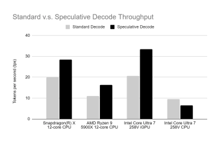
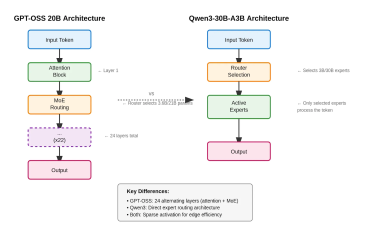

Inside the
Infrastructure
From memory and compute pipelines to context management and state workflows, we design the full AI stack, and herein share our progress to drive the future of local intelligence together.
Get Early Access

News
Follow new releases, engineering breakthroughs, and examples of Local AI in action — all built to run closer to where your product lives.



Ready to Get Started?
OpenInfer is now available! Sign up today to gain access and experience those performance gains for yourself.
Get Early Access